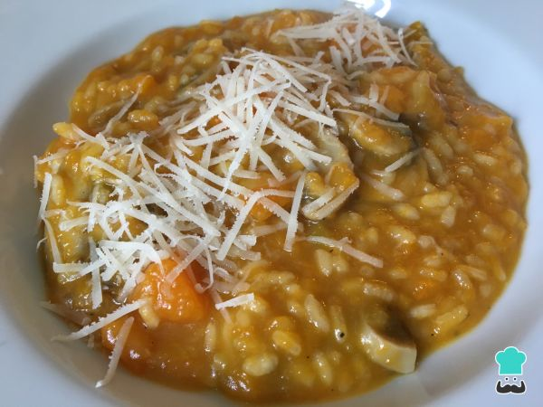

- Si no tienes caldo de verduras, puedes preparar uno mientras elaborados el resto de la receta. Para ello, pon a hervir unas verduras en abundante agua. Puedes incluir cebolla, puerro, apio y zanahoria. Deja hervir durante media hora y pon un poco de sal.
- Mientras se hace el caldo de verduras, hamos un sofrito con la cebolleta picada y un poco de aceite de oliva. Dejamos que se cocine durante 4 minutos.
- Agregamos la calabaza pelada y cortada en cuadraditos. Cuanto más pequeña la cortes antes se cocinará. Ponemos un poco de sal y pimiento negra molida y dejamos cocinar hasta que comience a ablandarse un poco, unos 20 minutos.
- Es el momento de incorporar los champiñones fileteados y limpios a este risotto de calabaza. Dejamos cocinar durante 2-3 minutos.
- Echamos el arroz, rehogamos mezclando bien con el resto de ingredientes y cubrimos con el caldo de verduras. Vamos moviendo el risotto de calabaza y champiñones poco a poco y dejamos que reduzca el agua.
- Lo importante del risotto es ir incorporando el caldo poco a poco y dejar que el arroz suelte el almidón y se cocine a fuego lento, pero siempre con líquido, sin que quede seco. El tiempo de cocción es de unos 20-22 minutos, dependiendo del tipo de arroz.
- Cuando tengamos el arroz casi listo, ponemos un poco de parmesano rallado y movemos para que se integre su sabor.
- Servimos el risotto de calabaza y champiñones con un poco más de parmesano rallado por encima.
Risotto de calabaza y champiñones
Autor: el cocinillas

El risotto es una técnica culinaria italiana que tiene su origen en el noroeste del país, concretamente en el Piamonte, donde tradicionalmente había abundancia de arroz. Cuando se cocina el risotto, el arroz cuece poco a poco con el resto de ingredientes del plato, no por separado. Verás como en este risotto de calabaza y champiñones uno de los distintivos es el queso parmesano, fundamental en cualquier variedad de risotto.
- 1 kilogramo de calabaza
- 1 cebolleta
- 120 gramos de champiñón
- 60 gramos de Parmesano
- 1 chorro de Aceite de oliva
- 150 gramos de arroz blanco
- 1 pizca de Sal
- 1 pizca de Pimienta negra
- 700 mililitros de caldo de verduras
10/07/2020. Juanita Pérez
Hmmmmm ... ¡ qué buena pinta tiene !
12/07/2020. Anónimo
Sí, mañana lo voy a probar y ya os contaré